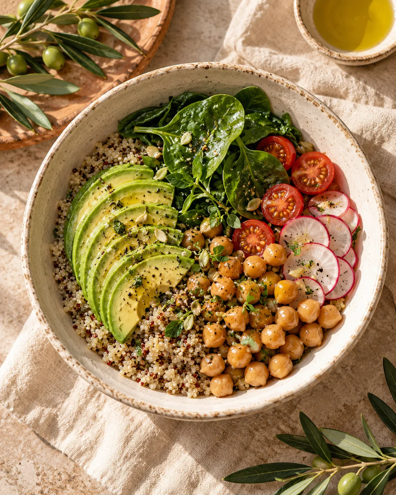
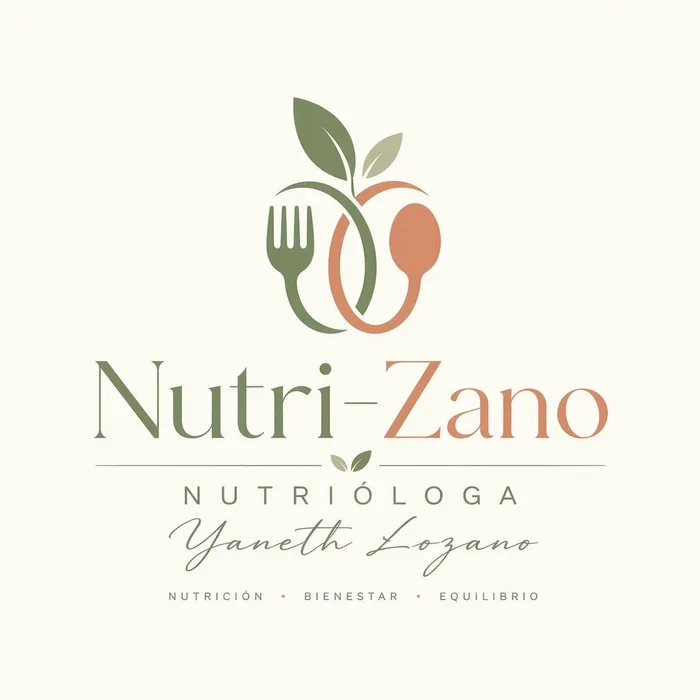

NUTRIÓLOGA YANETH LOZANO
Tu bienestar comienza con una mejor alimentación.
Acompañamiento nutricional personalizado para mejorar tus hábitos y alcanzar tus objetivos de bienestar.
❧Pequeños cambios.
Un bienestar que se construye contigo.
Un bienestar que se construye contigo.

ALIMENTA TU BIENESTAR ↗

Orientación personalizada✦Hábitos sostenibles✦Bienestar integral
01 / ACOMPAÑAMIENTO A TU MEDIDA
Servicios para tu bienestar
Cada persona tiene una historia.
Tu alimentación también merece un enfoque propio.
02 / DESCUBRE EL CATÁLOGOProductos que complementan
Productos que complementan
tu bienestar
Explora sabores, encuentra tus favoritos
y consulta su disponibilidad.
Fotografías reales de productos MAIXON. Precios y disponibilidad por confirmar. Revisa ingredientes y alérgenos con la profesional.
Un espacio para escucharte y acompañarte.
03 / CONOCE A TU NUTRIÓLOGALa nutrición se adapta
La nutrición se adapta
a tu vida.
Yaneth Lozano
En Nutri-Zano creemos que una alimentación saludable debe adaptarse a tu estilo de vida. Nuestro enfoque es acompañarte con orientación personalizada, educación nutricional y herramientas prácticas para construir hábitos sostenibles.
“Nutrición, bienestar y equilibrio.”
UN PRIMER PASO, A TU RITMO
Hablemos de tu bienestar.
Resolvamos tus dudas y encontremos el siguiente paso para ti.